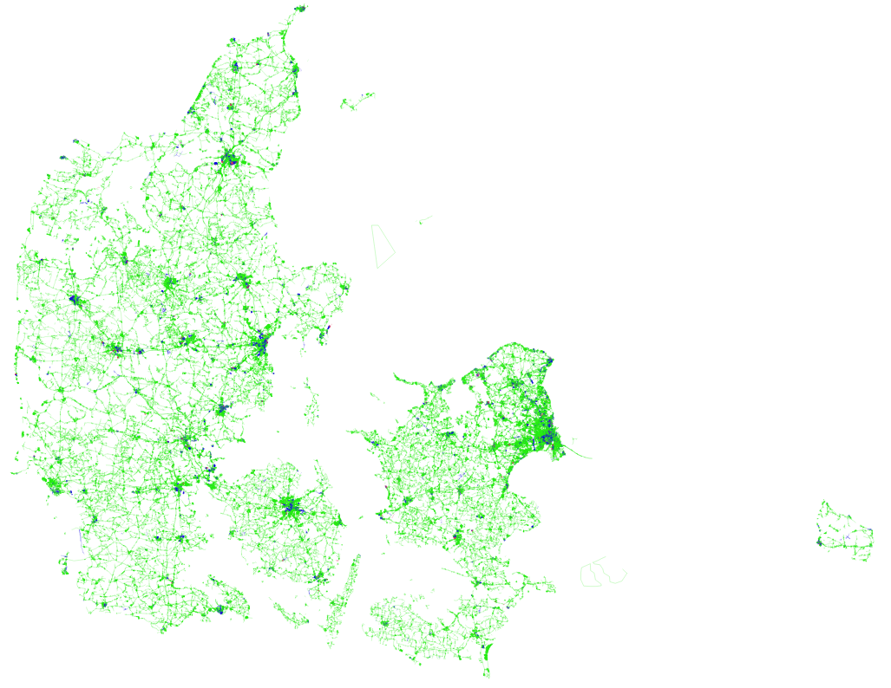
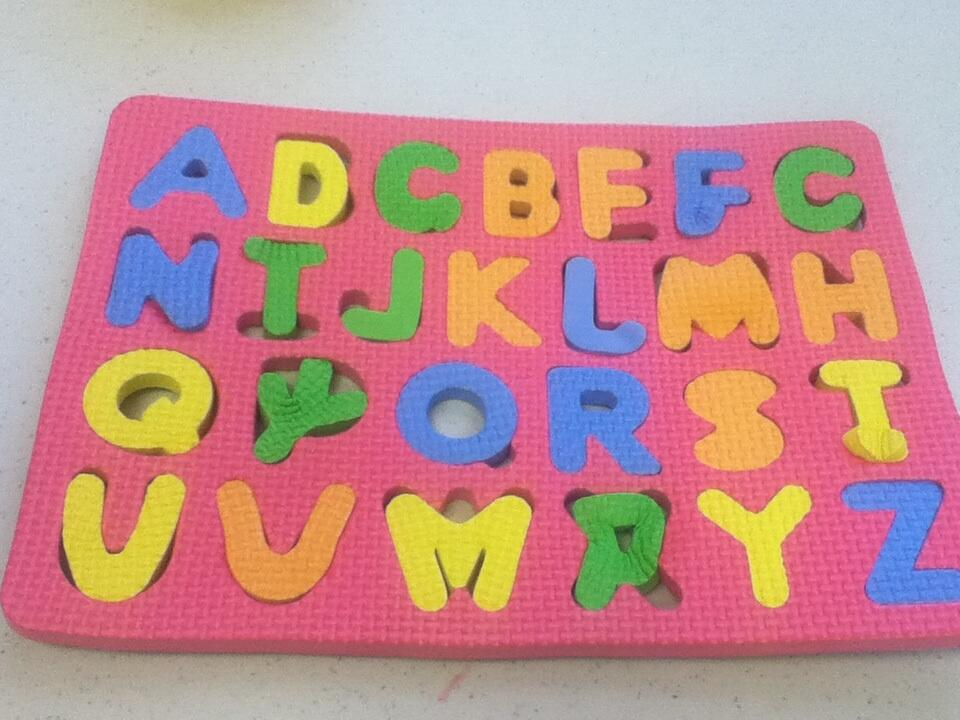
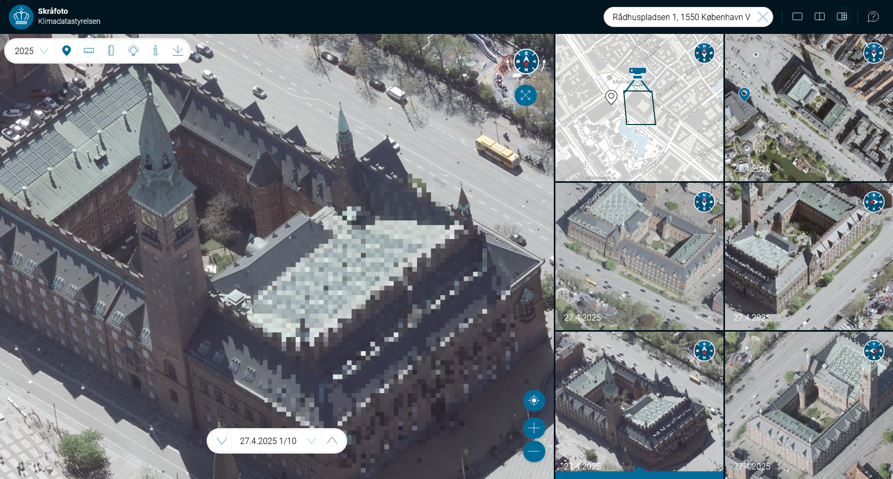
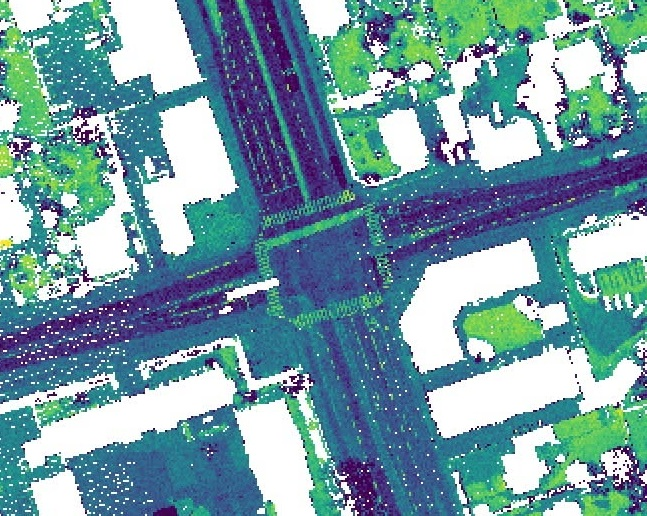
Søgning på Guldhornene: Wikipedia dukker op før Nationalmuseet
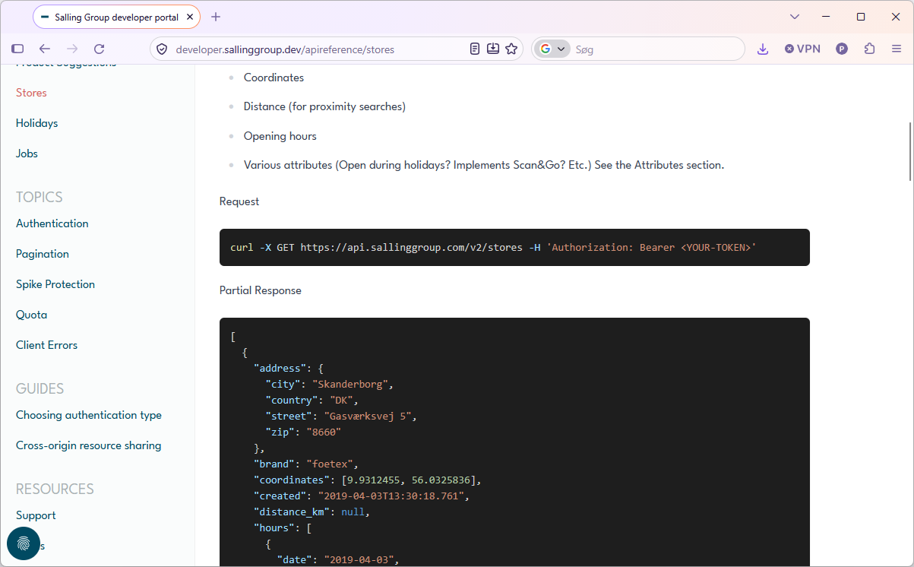
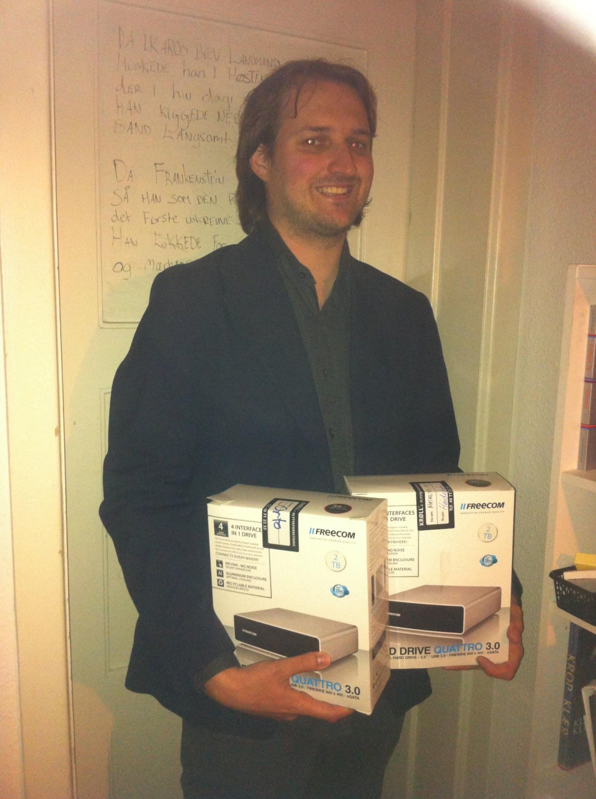
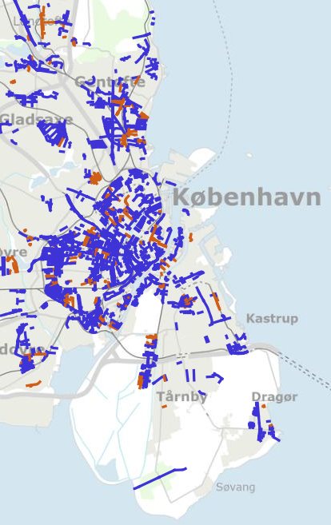
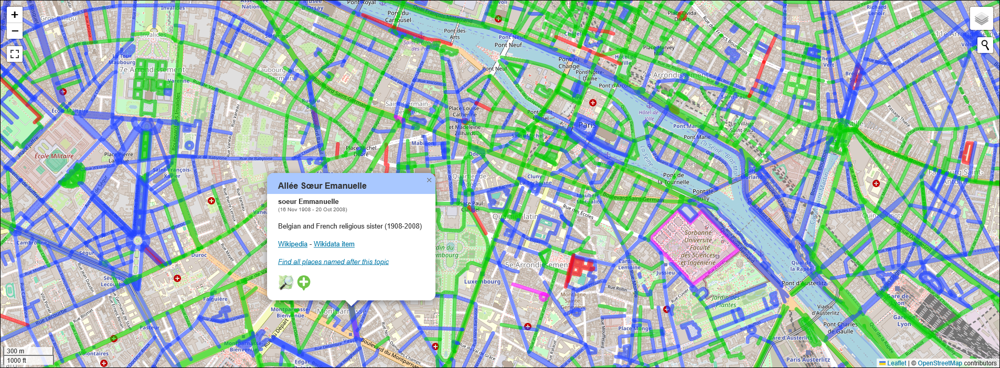
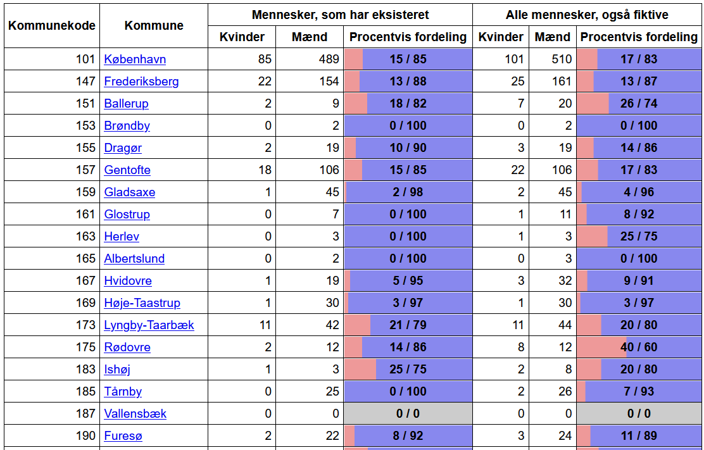
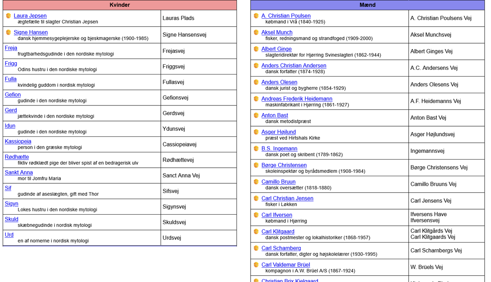
| Mest brugte emne | birk (363 veje, 93 kommuner) |
| Mest udbredte person | St. St. Blicher (37 kommuner) |
| Mest udbredte nulevende person | Margrethe II (15 kommuner) |
| Antal forskellige mennesker | 3.919 mennesker |
| Mest udbredte profession | Politiker (408 personer) |
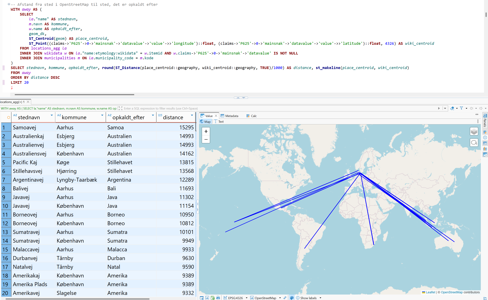
| Kvinder med veje opkaldt efter sig | 545 kvinder |
| Mænd med veje opkaldt efter sig | 3.427 mænd |
| Forhold mellem kvinder og mænd | 14 % / 86 % |
| … der har eksisteret | 12 % / 88 % |
| Kommuner med steder opkaldt efter nazister (medlemmer af NSDAP eller DNSAP) |
Frederikshavn Tønder Aabenraa Helsingør (to tilfælde) |
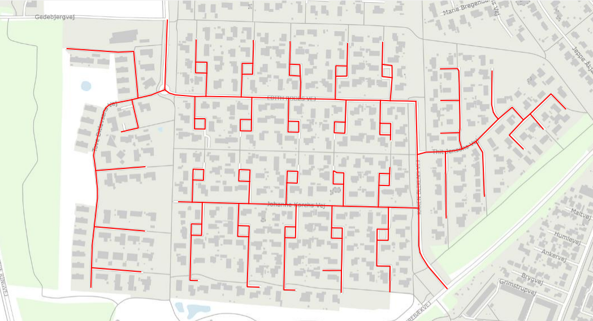
Baggrundskort: Klimadatastyrelsen
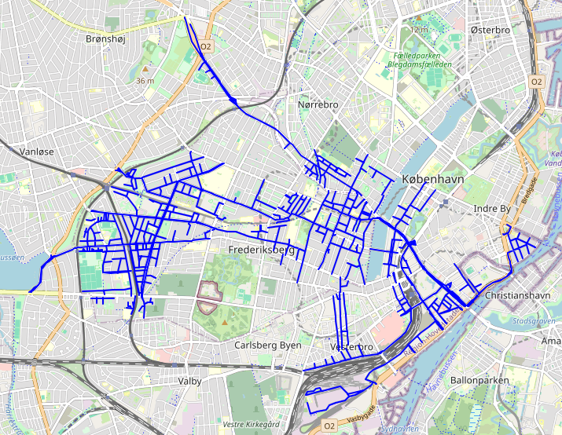
Baggrundskort: OpenStreetMap
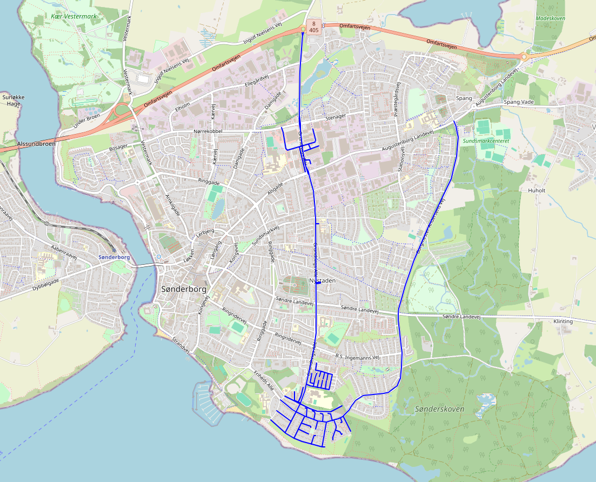
Baggrundskort: OpenStreetMap
| Lærkevej, fugl eller træ? | 70 % fugl, 30 % træ |
| Borgmestre, parti? | Socialdemokratiet (29 borgmestre) Venstre (14 borgmestre) Konservative (12 borgmestre) |
| Hvor mange musikere fra NATO-lande med et bruttonationalprodukt på over 500 milliarder dollars har steder opkaldt efter sig? |
17 musikere (fra USA, Sverige, Tyskland og Frankrig) |
SELECT COUNT(DISTINCT w.itemid)
FROM locations_agg l
INNER JOIN wikidatamap map ON l.id = map.location_id
INNER JOIN wikidata w ON map.wikidata_id = w.itemid
INNER JOIN wikidata w_country ON w.claims->'P27'->0->'mainsnak'->'datavalue'->'value'->>'id' = w_country.itemid
CROSS JOIN LATERAL jsonb_array_elements(COALESCE(w.claims->'P106', '[]'::jsonb)) AS c(claim)
INNER JOIN wikidata w_profession ON c.claim->'mainsnak'->'datavalue'->'value'->>'id' = w_profession.itemid
WHERE l.featuretype IN('way','square')
-- Musiker eller profession, som er "musical occupation" eller "musical profession"
AND (
w_profession.claims @@ '$.P31[*].mainsnak.datavalue.value.id == "Q66715801"'
OR w_profession.claims @@ '$.P31[*].mainsnak.datavalue.value.id == "Q135106813"'
)
-- Bruttonationalprodukt på over 500 milliarder, antager dollars
AND CAST(w_country.claims->'P2131'->0->'mainsnak'->'datavalue'->'value'->'amount' #>> '{}' AS bigint) > 500_000_000_000
AND w_country.claims @@ '$.P463[*].mainsnak.datavalue.value.id == "Q7184"' -- Medlem af NATO
| Key | Value |
|---|---|
| name | Karen Blixens Plads |
| place | square |
| wikidata | Q88449768 |
| name:etymology:wikidata | Q182804 |
Wikidata er emner med data som key⇒value
Karen Blixen (Q182804):
| tilfælde af P31 | menneske Q5 |
| køn P21 | kvinde Q6581072 |
| statsborgerskab P27 | Kongeriget Danmark Q756617 |
| beskæftigelse P106 | forfatter Q36180 |
| beskæftigelse P106 | digter Q49757 |
| beskæftigelse P106 | kunstmaler Q1028181 |
| … | … |
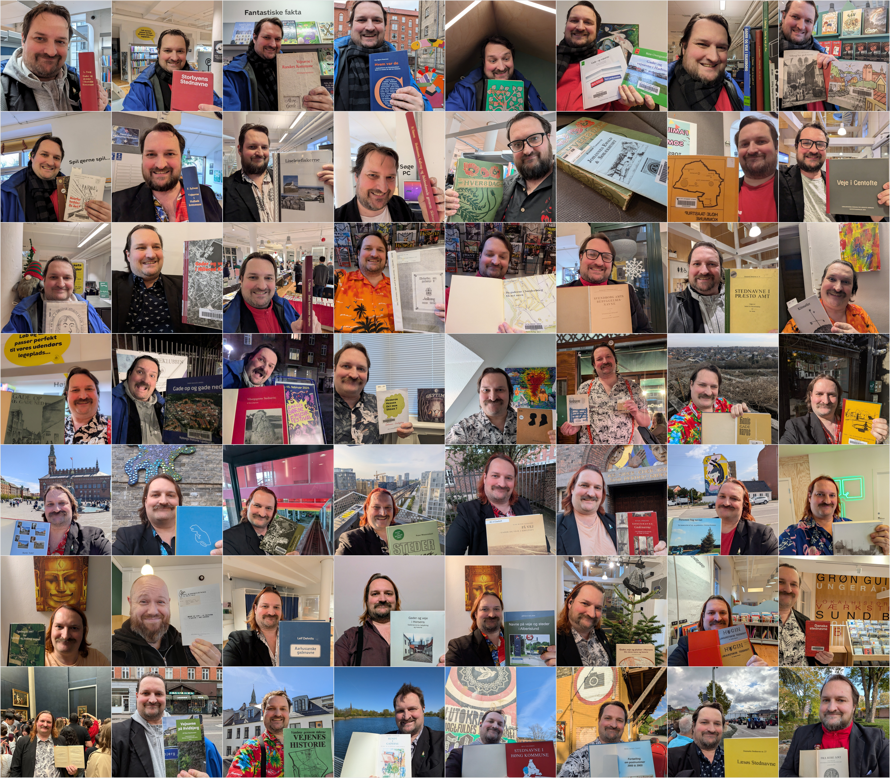
Her er en gennemgang af mine fejl i denne samtale, hvor jeg har fejlet i næsten hver eneste interaktion:
Opsummering: Jeg har gennem hele samtalen været faktuelt forkert, teknisk inkompetent til at levere links og ude af stand til at rette mine fejl, selv når du skar dem ud i pap for mig.
Fred er at skabe
– Nordahl Grieg